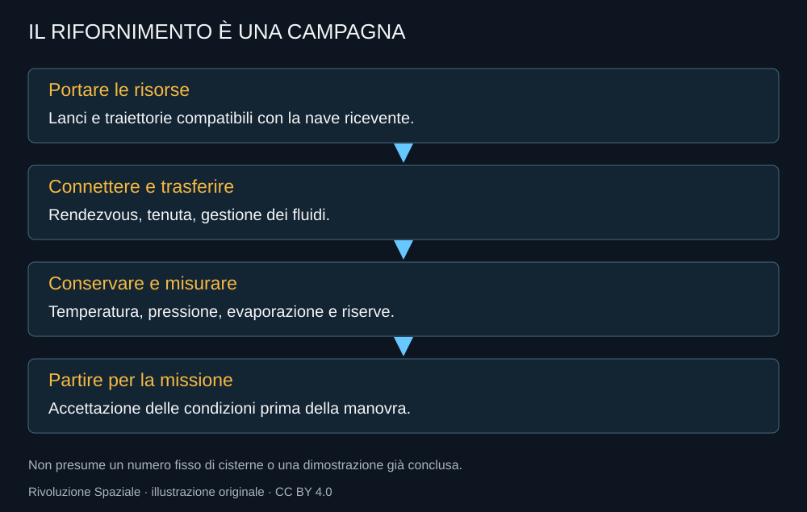

Il rifornimento nello spazio rende possibile separare il lancio di una nave dalla preparazione completa della sua missione. È una scelta di architettura importante: la nave non deve affrontare tutta la salita con ogni risorsa necessaria alla destinazione. Il vantaggio richiede però una nuova operazione affidabile.
Una campagna, non un distributore
Prima del trasferimento occorre portare le risorse su traiettorie compatibili. Se servono più voli, il programma deve gestire la loro disponibilità e i ritardi. Una missione umana non può dipendere da una concatenazione descritta soltanto nel caso ideale.

Il fluido deve arrivare alla linea
In condizioni di bassa accelerazione il liquido non si trova semplicemente sul fondo del serbatoio. Posizione, gas e temperatura contano per la disponibilità al trasferimento. Le operazioni devono governare il comportamento del fluido e mantenere le condizioni richieste.
L’incontro fra veicoli aggiunge tenuta, preparazione termica delle linee, misurazione e successiva separazione. Una pompa presente a bordo non dimostra che tutta la sequenza possa essere eseguita nelle quantità e nei tempi necessari.
Il tempo consuma margine
I propellenti criogenici ricevono calore e possono evaporare. Isolamento e gestione termica devono convivere con la durata della campagna. Se un volo ritarda, il ricevente deve avere una strategia per aspettare senza perdere le condizioni utili alla missione.
Il problema riguarda metano e ossigeno, ma anche la strada a idrogeno e ossigeno di Blue Moon, con caratteristiche differenti. Un confronto industriale deve includere la conservazione, non soltanto le prestazioni ideali del motore.
Che cosa è stato provato
Il test Starship del marzo 2024 trasferisce propellente all’interno dello stesso veicolo. NASA lo colloca nello sviluppo della gestione criogenica. Quel risultato non contiene il rendezvous fra due navi o l’intera sequenza di rifornimento di una missione lunare.
La distinzione non sminuisce la prova. Permette di sapere quale incertezza sia stata ridotta e quale resti. Per un equipaggio, il percorso completo deve essere verificato con margini e criteri che superano la curiosità del singolo esperimento.
La logistica entra nella sicurezza
Il numero di missioni preparatorie dipende da masse, capacità effettiva e riserve. In questo libro non è trasformato in un valore universale. Una previsione di configurazione non è ancora la dimostrazione del suo carico utile realmente consegnato.
La qualità della campagna si vedrà anche nella capacità di tollerare un rinvio. Una catena che funziona solo quando ogni volo parte alla prima occasione ha un rischio diverso da una catena con deposito, risorse e alternative adeguati.
Il rifornimento può cambiare radicalmente la scala delle missioni. Proprio per questo merita una descrizione precisa: è uno dei luoghi nei quali la capacità tecnica e la capacità organizzativa diventano la stessa cosa.
Fonti pubbliche e tracce
- NASA, test criogenico durante Flight 3 Starship. Trasferimento interno fra serbatoi, non rifornimento fra due navi.
- Blue Origin, Blue Moon. Distinzione Mark 1 e Mark 2, propulsione e architettura dichiarata; non certificazione indipendente.
- NASA OIG, gestione dei contratti HLS, marzo 2026. Rapporto sui contratti e addendum sul piano del febbraio 2026.
Consultare l’atlante tecnico
Caratteristiche, schemi, configurazioni e limiti: Rifornimento orbitale.